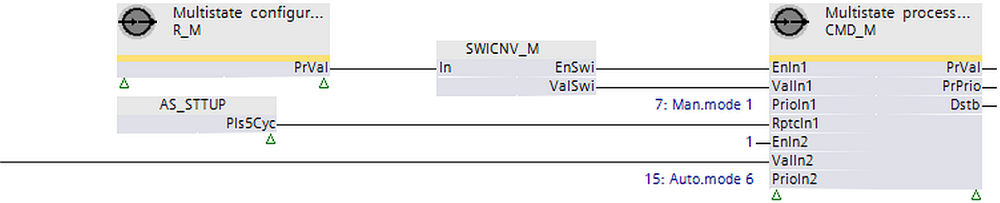

[CMD_M] Command multistate
Function block CMD_M commands property 'Present value' at a specific priority for a single multistate data point (or releases this priority).
CMD_M commands property 'Present value' with a specific priority for a single multistate data point (or releases this priority). CMD_M reads the transmitted present value and the present priority property to check whether these values were changed and a new commanding is required.
Compatible data points:
- Multistate output [MO]
- Multistate process value [MPrcVal]
- Third-party objects that include the requested properties and support the priority mechanism.
Required properties:
- Present value
- Status flag
- Priority array
- Present priority
Optional properties:
- Reliability
- Extension by event configuration
- Event state
- Acknowledged transitions
- Feedback value
- Extension by data aggregation
- Maintenance state
- Operating hours
- Suppress event notification
- Suppress event detection
- Enable aggregation
Operate with priorities
The function block uses 2 approaches to control if operating with priorities:
1. Exclusive control (planned for priorities 1..5, 9..12, 14..16)
- Only one command source is permitted for a data point priority.
- A function block on a project can command this priority.
- An input set of a function block can command this priority.
- The function block commands the priority anew or releases it if a priority is used from a function block and another commanding source changes this priority.
2. Last win control (planned for priorities 7, 8, 13)
- Multiple, command sources can use the same priority.
- The last commanded value (release) remains on the priority until a new command is performed by one of the commanding sources.
| Exclusive control | Last win control |
|---|---|---|
Behavior at plant startup | [EnIn1] = 0 | [EnIn1] = 0 |
[EnIn1] = 1 | [EnIn1] = 1 | |
Command process | If [EnIn1] changes from 0 to 1. | If [EnIn1] changes from 0 to 1. |
If [EnIn1] = 1 and [ValIn1] changes. | If [EnIn1] = 1 and [ValIn1] changes. | |
If [EnIn1] = 1 and [RptcIn1] = 1. | If [EnIn1] = 1 and [RptcIn1] = 1. | |
Release | If [EnIn1] changes from 1 to 0. | If [EnIn1] changes from 1 to 0. |
If [EnIn1] = 0 and [RptcIn1] = 1. | If [EnIn1] = 0 and [RptcIn1] = 1. | |
Behavior in the event of commanding from another source | [EnIn1] = 0 | [EnIn1] = 0 |
[EnIn1] = 1 | [EnIn1] = 1 |
The data point periodically saves the value of priority 8 to controller memory. After a power outage, the value is restored in the property 'Priority array' and evaluated by the data point. All other priorities are not saved to controller memory.
Operation with other input sets of function block ([EnIn2]...[EnIn4], [ValIn2]...[ValIn4], [RptcIn2]...[RptcIn4]) is the same.
Input | Description | Data type | Default value |
|---|---|---|---|
EnIn1…EnIn4 | Enable input 1…Enable input 4 [EnIn1] determines whether [ValIn1] is commanded at the priority from [PrioIn1] or the priority is released. | Boolean | 0 |
0 - Priority of [PrioIn1] is released if not active at the moment by setting another [EnInX] to 1. | |||
ValIn1…ValIn4 | Value input 1…Value input 4 The value for commanding at [PrioIn1]. | Integer | 1 |
PrioIn1…PrioIn4 | Priority input 1…Priority input 4 | Integer | 17 |
[PrioIn1] belongs to one of 4 input sets and receives the priority that accompanies [ValIn1]. Exclusive control: During startup, the function block can use exclusive control to initialize the assigned priorities in ranges 1...5, 9...12 and 14...16. During runtime, the function block retains exclusive control. If external overwriting is signaled, the function block can newly command or release at the priority of [PrioIn1]. Two or more input sets on the same function block cannot have a common, exclusive control priority, as this will result in conflicts. Last wins: No initialization of priorities during startup. During runtime, the last valid command controls priority. If 2 or more input sets have the same priority and are commanded concurrently, only the input set with the first numeric order is performed (In1...In4). Prio 6: Prio 8: | |||
RptcIn1…RptcIn4 | Repeat command input 1…Repeat command input 4 [RptcIn1] repeats a command or releases a priority. | Boolean | 0 |
EnInFb | Enable feedback input Enables the function for the value input of the feedback input. | Boolean | 0 |
ValInFb | Value feedback input Permits providing feedback values on the BACnet object. The value from [ValInFb] is written for property 'Feedback value'. | Integer | 1 |
|
SupEvtDet | Suppress event detection Suppresses the detection of events. | Boolean | 0 |
SupEvtNtf | Suppress event notification Suppresses notification of events. | Boolean | 0 |
EnDataAgn | Enable data aggregation Permits activation or deactivation of data aggregation. | Boolean | 0 |
|
BaObjRef | BA-Object reference | Structure | --- |
BaObjRef | Device identifier | Double Word | 16#3FFFFF |
BaObjRef | Object identifier | Double Word | 16#3FFFFF |
BaObjRef | Item identifier | Integer | -1 |
Output | Description | Data type | Default value |
|---|---|---|---|
PrVal | Present value Value of property 'Present value' for the referenced BACnet object. [PrVal] supplies the last valid value in the event of a fault. | Integer | 1 |
PrPrio | Present priority Active priority of the referenced BACnet object. [PrPrio] is set to:
| Integer | Default |
Overridden | |||
Dstb | Disturbed [Dstb] indicates whether the referenced BACnet object is in fault or in state OffNormal. When the BACnet object returns to state Normal, [Dstb] retains its value until the transition to normal is acknowledged. [Dstb] = 0, if the above condition is not fulfilled AND 'Acknowledged transitions' = x, x, 1. Note | Boolean | 0 |
Flty | Faulty [Flty] indicates whether the last event on the referenced BACnet object was in fault. If the BACnet object returns to the normal state, [Flty] retains its value until the transition to normal is acknowledged. [Flty] = 0, if the above condition is not fulfilled AND one of the following possibilities is valid:
Note | Boolean | 0 |
OffNrml | Offnormal [OffNrml] indicates whether the last event on the reference BACnet object was Offnormal. When the BACnet object returns to state Normal, [OffNrml] retains its value until the transition to normal is acknowledged. [OffNml] = 0, if the above condition is not fulfilled OR 'Event state' = Normal AND 'Acknowledged transitions' = x, x, 1. Note | Boolean | 0 |
Rlb | Reliability | Integer | 0: No fault detected |
Oph | Operating hours Displays the value of the property operating hours for the referenced BACnet object | Double Word | 0 |
MntnSta | Maintenance state Supplies the value for property 'Maintenance state' for the referenced BACnet object. | Integer | 1 |
1: None Note | |||
ErrCode | Error code indication | Integer | 0: No error |
= 0 - No error | |||
Values for manual priorities are not written after startup. Use the following programming logic to write manual priorities after startup:
